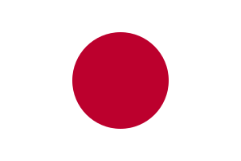

Flash-card quizzes to build your Japanese vocabulary — 頑張ってください (ganbatte kudasai)!
Japanese has around 125 million speakers, spoken almost entirely within Japan, and its vocabulary underpins a huge amount of globally exported culture — from anime and manga to video games and cuisine — which is part of why so many learners are drawn to it.
Every language deck on Flashlingo comes in three levels, so you can start where you actually are instead of where a textbook assumes you are.
Konnichiwa (hello), Arigatou (thank you), Onegaishimasu (please), Hai / Iie (yes / no), and Sayounara (goodbye) are a good everyday starting set.
Every word in the Flashlingo Japanese quiz, grouped by level and topic — 1,500 words in total. Use it to preview a category before you play, or to review the words you missed afterwards. Reading a list is no substitute for active recall, so once a topic looks familiar, test yourself with the quiz above.
The 500 highest-frequency words — numbers, colours, family, food, greetings and the everyday essentials.
| Japanese | Rōmaji | English |
|---|---|---|
| ゼロ | zero | zero |
| 一 | ichi | one |
| 二 | ni | two |
| 三 | san | three |
| 四 | yon | four |
| 五 | go | five |
| 六 | roku | six |
| 七 | nana | seven |
| 八 | hachi | eight |
| 九 | kyū | nine |
| 十 | jū | ten |
| 十一 | jūichi | eleven |
| 十二 | jūni | twelve |
| 十三 | jūsan | thirteen |
| 十四 | jūyon | fourteen |
| 十五 | jūgo | fifteen |
| 十六 | jūroku | sixteen |
| 十七 | jūnana | seventeen |
| 十八 | jūhachi | eighteen |
| 十九 | jūkyū | nineteen |
| 二十 | nijū | twenty |
| 三十 | sanjū | thirty |
| 四十 | yonjū | forty |
| 五十 | gojū | fifty |
| 六十 | rokujū | sixty |
| 七十 | nanajū | seventy |
| 八十 | hachijū | eighty |
| 九十 | kyūjū | ninety |
| 百 | hyaku | hundred |
| 千 | sen | thousand |
| Japanese | Rōmaji | English |
|---|---|---|
| 赤 | aka | red |
| 青 | ao | blue |
| 緑 | midori | green |
| 黄色 | kiiro | yellow |
| オレンジ色 | orenji-iro | orange |
| 紫 | murasaki | purple |
| ピンク | pinku | pink |
| 黒 | kuro | black |
| 白 | shiro | white |
| 灰色 | haiiro | grey |
| 茶色 | chairo | brown |
| ベージュ | bēju | beige |
| Japanese | Rōmaji | English |
|---|---|---|
| 月曜日 | getsuyōbi | Monday |
| 火曜日 | kayōbi | Tuesday |
| 水曜日 | suiyōbi | Wednesday |
| 木曜日 | mokuyōbi | Thursday |
| 金曜日 | kin'yōbi | Friday |
| 土曜日 | doyōbi | Saturday |
| 日曜日 | nichiyōbi | Sunday |
| Japanese | Rōmaji | English |
|---|---|---|
| 一月 | ichigatsu | January |
| 二月 | nigatsu | February |
| 三月 | sangatsu | March |
| 四月 | shigatsu | April |
| 五月 | gogatsu | May |
| 六月 | rokugatsu | June |
| 七月 | shichigatsu | July |
| 八月 | hachigatsu | August |
| 九月 | kugatsu | September |
| 十月 | jūgatsu | October |
| 十一月 | jūichigatsu | November |
| 十二月 | jūnigatsu | December |
| Japanese | Rōmaji | English |
|---|---|---|
| 春 | haru | spring |
| 夏 | natsu | summer |
| 秋 | aki | autumn |
| 冬 | fuyu | winter |
| Japanese | Rōmaji | English |
|---|---|---|
| 家族 | kazoku | family |
| お父さん | otōsan | father |
| お母さん | okāsan | mother |
| 息子 | musuko | son |
| 娘 | musume | daughter |
| 兄 | ani | brother |
| 姉 | ane | sister |
| おじいさん | ojīsan | grandfather |
| おばあさん | obāsan | grandmother |
| おじさん | ojisan | uncle |
| おばさん | obasan | aunt |
| 従兄 | itoko | cousin (male) |
| 従姉 | itoko | cousin (female) |
| 夫 | otto | husband |
| 妻 | tsuma | wife |
| 子供 | kodomo | child |
| 赤ちゃん | akachan | baby |
| 両親 | ryōshin | parents |
| Japanese | Rōmaji | English |
|---|---|---|
| 頭 | atama | head |
| 顔 | kao | face |
| 髪 | kami | hair |
| 目 | me | eye |
| 目 | me | eyes |
| 鼻 | hana | nose |
| 口 | kuchi | mouth |
| 耳 | mimi | ear |
| 首 | kubi | neck |
| 肩 | kata | shoulder |
| 腕 | ude | arm |
| 手 | te | hand |
| 指 | yubi | finger |
| お腹 | onaka | stomach |
| 背中 | senaka | back |
| 脚 | ashi | leg |
| 膝 | hiza | knee |
| 足 | ashi | foot |
| 心臓 | shinzō | heart |
| 歯 | ha | tooth |
| 舌 | shita | tongue |
| Japanese | Rōmaji | English |
|---|---|---|
| 猫 | neko | cat |
| 犬 | inu | dog |
| 馬 | uma | horse |
| 牛 | ushi | cow |
| 豚 | buta | pig |
| 羊 | hitsuji | sheep |
| ヤギ | yagi | goat |
| 鶏 | niwatori | chicken |
| ウサギ | usagi | rabbit |
| ネズミ | nezumi | mouse |
| 鳥 | tori | bird |
| 魚 | sakana | fish |
| カエル | kaeru | frog |
| ヘビ | hebi | snake |
| ゾウ | zō | elephant |
| ライオン | raion | lion |
| トラ | tora | tiger |
| クマ | kuma | bear |
| サル | saru | monkey |
| アヒル | ahiru | duck |
| めんどり | mendori | hen |
| Japanese | Rōmaji | English |
|---|---|---|
| パン | pan | bread |
| チーズ | chīzu | cheese |
| バター | batā | butter |
| 牛乳 | gyūnyū | milk |
| 卵 | tamago | egg |
| 肉 | niku | meat |
| 豚肉 | butaniku | pork |
| 牛肉 | gyūniku | beef |
| りんご | ringo | apple |
| 梨 | nashi | pear |
| バナナ | banana | banana |
| オレンジ | orenji | orange (fruit) |
| いちご | ichigo | strawberry |
| ぶどう | budō | grape |
| トマト | tomato | tomato |
| にんじん | ninjin | carrot |
| じゃがいも | jagaimo | potato |
| 玉ねぎ | tamanegi | onion |
| サラダ | sarada | salad |
| ご飯 | gohan | rice |
| パスタ | pasuta | pasta |
| スープ | sūpu | soup |
| ケーキ | kēki | cake |
| チョコレート | chokorēto | chocolate |
| 砂糖 | satō | sugar |
| 塩 | shio | salt |
| コショウ | koshō | pepper |
| 油 | abura | oil |
| 食事 | shokuji | meal |
| 朝ご飯 | asagohan | breakfast |
| 昼ご飯 | hirugohan | lunch |
| 晩ご飯 | bangohan | dinner |
| Japanese | Rōmaji | English |
|---|---|---|
| 水 | mizu | water |
| ジュース | jūsu | juice |
| コーヒー | kōhī | coffee |
| お茶 | ocha | tea |
| ワイン | wain | wine |
| ビール | bīru | beer |
| オレンジジュース | orenji jūsu | orange juice |
| Japanese | Rōmaji | English |
|---|---|---|
| 服 | fuku | clothes |
| シャツ | shatsu | shirt |
| ズボン | zubon | trousers |
| ワンピース | wanpīsu | dress |
| スカート | sukāto | skirt |
| コート | kōto | coat |
| ジャケット | jaketto | jacket |
| セーター | sētā | sweater |
| 靴 | kutsu | shoes |
| 靴下 | kutsushita | socks |
| 帽子 | bōshi | hat |
| ネクタイ | nekutai | tie |
| ジーンズ | jīnzu | jeans |
| Tシャツ | T-shatsu | t-shirt |
| 半ズボン | hanzubon | shorts |
| 手袋 | tebukuro | gloves |
| マフラー | mafurā | scarf |
| Japanese | Rōmaji | English |
|---|---|---|
| 家 | ie | house |
| アパート | apāto | apartment |
| 部屋 | heya | room |
| 寝室 | shinshitsu | bedroom |
| 台所 | daidokoro | kitchen |
| 浴室 | yokushitsu | bathroom |
| トイレ | toire | toilet |
| 居間 | ima | living room |
| 食堂 | shokudō | dining room |
| 庭 | niwa | garden |
| ドア | doa | door |
| 窓 | mado | window |
| 階段 | kaidan | stairs |
| ベッド | beddo | bed |
| 椅子 | isu | chair |
| テーブル | tēburu | table |
| ソファ | sofa | sofa |
| タンス | tansu | wardrobe |
| 机 | tsukue | desk |
| ランプ | ranpu | lamp |
| 鏡 | kagami | mirror |
| じゅうたん | jūtan | rug |
| 冷蔵庫 | reizōko | fridge |
| オーブン | ōbun | oven |
| Japanese | Rōmaji | English |
|---|---|---|
| だ | da | to be (permanent) |
| いる | iru | to be (temporary) |
| 持つ | motsu | to have |
| 行く | iku | to go |
| する | suru | to do / to make |
| 言う | iu | to say |
| 見る | miru | to see |
| 知る | shiru | to know (fact) |
| できる | dekiru | to be able to |
| 欲しい | hoshii | to want |
| 来る | kuru | to come |
| 取る | toru | to take |
| あげる | ageru | to give |
| 見つける | mitsukeru | to find |
| 話す | hanasu | to speak |
| 食べる | taberu | to eat |
| 飲む | nomu | to drink |
| 寝る | neru | to sleep |
| 働く | hataraku | to work |
| 住む | sumu | to live |
| 好き | suki | to like |
| 読む | yomu | to read |
| 書く | kaku | to write |
| 聞く | kiku | to listen |
| 見る | miru | to watch |
| 買う | kau | to buy |
| 売る | uru | to sell |
| 開ける | akeru | to open |
| 閉める | shimeru | to close |
| 始める | hajimeru | to begin |
| 終わる | owaru | to finish |
| 歩く | aruku | to walk |
| 走る | hashiru | to run |
| 遊ぶ | asobu | to play |
| 歌う | utau | to sing |
| 踊る | odoru | to dance |
| 呼ぶ | yobu | to call |
| 答える | kotaeru | to answer |
| 探す | sagasu | to look for |
| 手伝う | tetsudau | to help |
| 考える | kangaeru | to think |
| 信じる | shinjiru | to believe |
| 知っている | shitteiru | to know (person/place) |
| 使う | tsukau | to use |
| 待つ | matsu | to wait |
| 出る | deru | to leave / to go out |
| 着く | tsuku | to arrive |
| 入る | hairu | to enter |
| 置く | oku | to put |
| 着る | kiru | to carry / to wear |
| 泳ぐ | oyogu | to swim |
| 料理する | ryōri suru | to cook |
| 運転する | unten suru | to drive |
| 旅行する | ryokō suru | to travel |
| 学ぶ | manabu | to learn |
| 分かる | wakaru | to understand |
| 聞く | kiku | to ask |
| 見せる | miseru | to show |
| 笑う | warau | to laugh |
| 泣く | naku | to cry |
| 落ちる | ochiru | to fall |
| 泊まる | tomaru | to stay |
| 払う | harau | to pay |
| 必要 | hitsuyō | to need |
| 掃除する | sōji suru | to clean |
| 選ぶ | erabu | to choose |
| 勝つ | katsu | to win / to earn |
| 負ける | makeru | to lose |
| 忘れる | wasureru | to forget |
| 覚える | oboeru | to remember |
| 分ける | wakeru | to share |
| 準備する | junbi suru | to prepare |
| 受け入れる | ukeireru | to accept |
| 断る | kotowaru | to refuse |
| 説明する | setsumei suru | to explain |
| 続ける | tsuzukeru | to continue |
| 帰る | kaeru | to return |
| 訪れる | otozureru | to visit |
| 変える | kaeru | to change |
| 提供する | teikyō suru | to offer |
| 許す | yurusu | to allow |
| 予約する | yoyaku suru | to book / to reserve |
| 繰り返す | kurikaesu | to repeat |
| 誘う | sasou | to invite |
| 改善する | kaizen suru | to improve |
| 参加する | sanka suru | to join |
| 決める | kimeru | to decide |
| 試す | tamesu | to try |
| 成功する | seikō suru | to succeed |
| Japanese | Rōmaji | English |
|---|---|---|
| 大きい | ōkii | big / tall |
| 小さい | chiisai | small / little |
| いい | ii | good |
| 悪い | warui | bad |
| 美しい | utsukushii | beautiful |
| かわいい | kawaii | pretty |
| 古い | furui | old |
| 若い | wakai | young |
| 新しい | atarashii | new |
| 長い | nagai | long |
| 短い | mijikai | short |
| 暑い | atsui | hot / warm |
| 寒い | samui | cold |
| 簡単 | kantan | easy |
| 難しい | muzukashii | difficult |
| 速い | hayai | fast |
| 遅い | osoi | slow |
| 強い | tsuyoi | strong |
| 弱い | yowai | weak |
| 裕福 | yūfuku | rich |
| 貧しい | mazushii | poor |
| 嬉しい | ureshii | happy / pleased |
| 悲しい | kanashii | sad |
| 疲れた | tsukareta | tired |
| 病気 | byōki | ill / sick |
| きれい | kirei | clean |
| 汚い | kitanai | dirty |
| 開いている | hiraiteiru | open |
| 閉まっている | shimatteiru | closed |
| いっぱい | ippai | full |
| 空 | kara | empty |
| 一人 | hitori | alone |
| 自由 | jiyū | free |
| 忙しい | isogashii | busy |
| 幸せ | shiawase | happy |
| 親切 | shinsetsu | nice / friendly |
| 面白い | omoshiroi | interesting |
| 賢い | kashikoi | intelligent |
| 現代的 | gendaiteki | modern |
| 自然 | shizen | natural |
| 大切 | taisetsu | important |
| 違う | chigau | different |
| 完璧 | kanpeki | perfect |
| 美味しい | oishii | delicious |
| 危険 | kiken | dangerous |
| 静か | shizuka | calm |
| うるさい | urusai | noisy |
| 特別 | tokubetsu | special |
| 最後 | saigo | last |
| 最初 | saisho | first |
| 次 | tsugi | next |
| 同じ | onaji | same |
| Japanese | Rōmaji | English |
|---|---|---|
| おはようございます | ohayō gozaimasu | good morning |
| こんにちは | konnichiwa | good afternoon |
| おやすみなさい | oyasuminasai | good night |
| こんにちは | konnichiwa | hello / hi |
| さようなら | sayōnara | goodbye |
| ありがとう | arigatō | thank you |
| お願いします | onegaishimasu | please |
| どういたしまして | dō itashimashite | you're welcome |
| すみません | sumimasen | excuse me / sorry |
| 失礼します | shitsurei shimasu | excuse me (formal) |
| はじめまして | hajimemashite | nice to meet you |
| はい | hai | yes |
| いいえ | iie | no |
| Japanese | Rōmaji | English |
|---|---|---|
| 今日 | kyō | today |
| 明日 | ashita | tomorrow |
| 昨日 | kinō | yesterday |
| 今 | ima | now |
| いつも | itsumo | always |
| 決して | kesshite | never |
| よく | yoku | often |
| 時々 | tokidoki | sometimes |
| 早い | hayai | early |
| 遅い | osoi | late |
| 時間 | jikan | hour / time |
| 分 | fun | minute |
| 日 | hi | day |
| 週間 | shūkan | week |
| 月 | tsuki | month |
| 年 | nen | year |
| 朝 | asa | morning |
| 昼 | hiru | noon |
| 午後 | gogo | afternoon |
| 夜 | yoru | night |
| 週末 | shūmatsu | weekend |
| Japanese | Rōmaji | English |
|---|---|---|
| 太陽 | taiyō | sun |
| 雨 | ame | rain |
| 雪 | yuki | snow |
| 風 | kaze | wind |
| 雲 | kumo | cloud |
| 嵐 | arashi | storm |
| 霧 | kiri | fog |
| 暑さ | atsusa | heat |
| 天気がいい | tenki ga ii | the weather is nice |
| 雨が降っている | ame ga futteiru | it is raining |
| 雪が降っている | yuki ga futteiru | it is snowing |
| Japanese | Rōmaji | English |
|---|---|---|
| 車 | kuruma | car |
| 電車 | densha | train |
| バス | basu | bus |
| 地下鉄 | chikatetsu | metro / subway |
| 飛行機 | hikōki | plane |
| 船 | fune | boat |
| タクシー | takushī | taxi |
| 自転車 | jitensha | bicycle |
| オートバイ | ōtobai | motorcycle |
| 駅 | eki | train station |
| 空港 | kūkō | airport |
| バス停 | basutei | bus stop |
| Japanese | Rōmaji | English |
|---|---|---|
| 学校 | gakkō | school |
| 大学 | daigaku | university |
| オフィス | ofisu | office |
| 店 | mise | shop / store |
| 市場 | ichiba | market |
| スーパー | sūpā | supermarket |
| レストラン | resutoran | restaurant |
| カフェ | kafe | café |
| 病院 | byōin | hospital |
| 薬局 | yakkyoku | pharmacy |
| 銀行 | ginkō | bank |
| 教会 | kyōkai | church |
| 通り | tōri | street |
| 都市 | toshi | city |
| 村 | mura | village |
| 国 | kuni | country |
| 日本 | Nihon | Japan |
| 公園 | kōen | park |
| ビーチ | bīchi | beach |
| 山 | yama | mountain |
| 森 | mori | forest |
| 海 | umi | sea |
| 川 | kawa | river |
| 城 | shiro | castle |
| 博物館 | hakubutsukan | museum |
| 劇場 | gekijō | theatre |
| プール | pūru | swimming pool |
| スタジアム | sutajiamu | stadium |
| ショッピングセンター | shoppingu sentā | shopping centre |
| ホテル | hoteru | hotel |
| 大聖堂 | daiseidō | cathedral |
| Japanese | Rōmaji | English |
|---|---|---|
| 本 | hon | book |
| ペン | pen | pen |
| 鉛筆 | enpitsu | pencil |
| ノート | nōto | notebook |
| 電話 | denwa | phone |
| コンピューター | konpyūtā | computer |
| 鍵 | kagi | key |
| かばん | kaban | bag |
| 腕時計 | udedokei | watch |
| お金 | okane | money |
| カード | kādo | card |
| 新聞 | shinbun | newspaper |
| 写真 | shashin | photo |
| 手紙 | tegami | letter |
| プレゼント | purezento | gift |
| おもちゃ | omocha | toy |
| Japanese | Rōmaji | English |
|---|---|---|
| 医者 | isha | doctor |
| 看護師 | kangoshi | nurse |
| 先生 | sensei | teacher |
| 学生 | gakusei | student |
| 料理人 | ryōrinin | cook |
| 警察官 | keisatsukan | police officer |
| 消防士 | shōbōshi | firefighter |
| 弁護士 | bengoshi | lawyer |
| エンジニア | enjinia | engineer |
| ウェイター | weitā | waiter |
| 俳優 | haiyū | actor |
| 歯医者 | haisha | dentist |
| マネージャー | manējā | manager |
| ジャーナリスト | jānarisuto | journalist |
| 運転手 | untenshu | driver |
| Japanese | Rōmaji | English |
|---|---|---|
| 教室 | kyōshitsu | classroom |
| 授業 | jugyō | lesson |
| 宿題 | shukudai | homework |
| 試験 | shiken | exam |
| 成績 | seiseki | grade |
| 黒板 | kokuban | blackboard |
| 図書館 | toshokan | library |
| 辞書 | jisho | dictionary |
| 電卓 | dentaku | calculator |
| 定規 | jōgi | ruler |
| 質問 | shitsumon | question |
| 答え | kotae | answer |
| 科目 | kamoku | subject |
| 間違い | machigai | mistake |
| 休み時間 | yasumi jikan | break / recess |
| Japanese | Rōmaji | English |
|---|---|---|
| 誰 | dare | who |
| 何 | nani | what |
| どこ | doko | where |
| いつ | itsu | when |
| どう | dō | how |
| なぜ | naze | why |
| いくつ | ikutsu | how much / how many |
| どれ | dore | which |
| Japanese | Rōmaji | English |
|---|---|---|
| そして | soshite | and |
| または | matawa | or |
| でも | demo | but |
| から | kara | because |
| だから | dakara | so / therefore |
| もし | moshi | if |
| も | mo | also / too |
| とても | totemo | very |
| 十分 | jūbun | quite / enough |
| たぶん | tabun | maybe |
| もちろん | mochiron | of course |
| 分かった | wakatta | ok / agreed |
500 words for real conversations about work, travel, health, media, money and current affairs.
| Japanese | Rōmaji | English |
|---|---|---|
| 雇用 | koyō | employment |
| 失業 | shitsugyō | unemployment |
| 会社 | kaisha | company |
| 給料 | kyūryō | salary |
| 契約 | keiyaku | contract |
| キャリア | kyaria | career |
| 研修 | kenshū | training |
| 採用 | saiyō | recruitment |
| 職位 | shokui | position |
| 予算 | yosan | budget |
| 報告書 | hōkokusho | report |
| 締め切り | shimekiri | deadline |
| 目標 | mokuhyō | objective |
| 生産性 | seisansei | productivity |
| 請負業者 | ukeoi gyōsha | contractor |
| 在宅勤務 | zaitaku kinmu | remote work |
| インターン | intān | intern |
| ボーナス | bōnasu | bonus |
| 組合 | kumiai | union |
| ストライキ | sutoraiki | strike |
| 雇用主 | koyōnushi | employer |
| 解雇する | kaiko suru | to fire |
| 辞める | yameru | to resign |
| 履歴書 | rirekisho | CV |
| 面接 | mensetsu | job interview |
| 応募する | ōbo suru | to apply |
| 会議 | kaigi | meeting |
| チーム | chīmu | team |
| プロジェクト | purojekuto | project |
| 同僚 | dōryō | colleague |
| 昇進 | shōshin | promotion |
| 職場 | shokuba | workplace |
| 残業 | zangyō | overtime |
| Japanese | Rōmaji | English |
|---|---|---|
| 大統領 | daitōryō | president |
| 議会 | gikai | parliament |
| 選挙 | senkyo | election |
| 法律 | hōritsu | law |
| 投票 | tōhyō | vote |
| 政党 | seitō | party |
| 民主主義 | minshu shugi | democracy |
| 市民 | shimin | citizen |
| 憲法 | kenpō | constitution |
| 大臣 | daijin | minister |
| 上院 | jōin | senate |
| 大使 | taishi | ambassador |
| 合意 | gōi | agreement |
| 条約 | jōyaku | treaty |
| 改革 | kaikaku | reform |
| 討論 | tōron | debate |
| 演説 | enzetsu | speech |
| キャンペーン | kyanpēn | campaign |
| 候補者 | kōhosha | candidate |
| 野党 | yatō | opposition |
| 連立 | renritsu | coalition |
| 自由 | jiyū | freedom |
| 権利 | kenri | right |
| 国境 | kokkyō | border |
| 政府 | seifu | government |
| 有権者 | yūkensha | voter |
| 政策 | seisaku | policy |
| Japanese | Rōmaji | English |
|---|---|---|
| 薬 | kusuri | medication |
| 手術 | shujutsu | operation |
| 病気 | byōki | illness |
| 症状 | shōjō | symptom |
| 診断 | shindan | diagnosis |
| 治療 | chiryō | treatment |
| 回復 | kaifuku | recovery |
| 外科手術 | geka shujutsu | surgery |
| 救急室 | kyūkyūshitsu | emergency room |
| 処方箋 | shohōsen | prescription |
| ワクチン | wakuchin | vaccine |
| アレルギー | arerugī | allergy |
| 痛み | itami | pain |
| 熱 | netsu | fever |
| 血圧 | ketsuatsu | blood pressure |
| 糖尿病 | tōnyōbyō | diabetes |
| がん | gan | cancer |
| 療法 | ryōhō | therapy |
| けが | kega | injury |
| 骨折 | kossetsu | fracture |
| 診療所 | shinryōjo | doctor's office |
| 相談 | sōdan | consultation |
| 健康保険 | kenkō hoken | health insurance |
| 薬剤師 | yakuzaishi | pharmacist |
| 治療法 | chiryōhō | remedy |
| クリニック | kurinikku | clinic |
| 外科医 | gekai | surgeon |
| 看護師 | kangoshi | nurse |
| 専門医 | senmon'i | specialist |
| レントゲン | rentogen | X-ray |
| 免疫系統 | men'eki keitō | immune system |
| 健康診断 | kenkō shindan | checkup |
| 流行病 | ryūkōbyō | epidemic |
| Japanese | Rōmaji | English |
|---|---|---|
| 環境 | kankyō | environment |
| 汚染 | osen | pollution |
| 温暖化 | ondanka | warming |
| 生態学 | seitaigaku | ecology |
| リサイクル | risaikuru | recycling |
| 廃棄物 | haikibutsu | waste |
| 生物多様性 | seibutsu tayōsei | biodiversity |
| 持続可能な開発 | jizoku kanō na kaihatsu | sustainable development |
| カーボンフットプリント | kābon futtopurinto | carbon footprint |
| 風力タービン | fūryoku tābin | wind turbine |
| 太陽エネルギー | taiyō enerugī | solar energy |
| 排出 | haishutsu | emissions |
| 干ばつ | kanbatsu | drought |
| 洪水 | kōzui | flood |
| 地震 | jishin | earthquake |
| 大気 | taiki | atmosphere |
| オゾン層 | ozon sō | ozone layer |
| 森林伐採 | shinrin bassai | deforestation |
| 野生動物 | yasei dōbutsu | wildlife |
| 植物相 | shokubutsusō | flora |
| 堆肥 | taihi | compost |
| 温室効果 | onshitsu kōka | greenhouse effect |
| 再生可能エネルギー | saisei kanō enerugī | renewable energy |
| 石油流出 | sekiyu ryūshutsu | oil spill |
| 気候変動 | kikō hendō | climate change |
| 保護 | hogo | conservation |
| 生態系 | seitaikei | ecosystem |
| Japanese | Rōmaji | English |
|---|---|---|
| ネットワーク | nettowāku | network |
| ソフトウェア | sofutowea | software |
| アプリ | apuri | app |
| データ | dēta | data |
| デジタル | dejitaru | digital |
| 人工知能 | jinkō chinō | artificial intelligence |
| ロボット | robotto | robot |
| ダウンロードする | daunrōdo suru | to download |
| サイバーセキュリティ | saibā sekyuriti | cybersecurity |
| 革新 | kakushin | innovation |
| 画面 | gamen | screen |
| タブレット | taburetto | tablet |
| バックアップ | bakkuappu | backup |
| クラウド | kuraudo | cloud |
| アルゴリズム | arugorizumu | algorithm |
| プログラミング | puroguramingu | programming |
| コード | kōdo | code |
| インターフェース | intāfēsu | interface |
| 更新 | kōshin | update |
| ハッキング | hakkingu | hacking |
| パスワード | pasuwādo | password |
| サーバー | sābā | server |
| 接続 | setsuzoku | connection |
| ソーシャルネットワーク | sōsharu nettowāku | social network |
| ストリーミング | sutorīmingu | streaming |
| データベース | dētabēsu | database |
| ファイアウォール | faiaōru | firewall |
| Japanese | Rōmaji | English |
|---|---|---|
| 絵画 | kaiga | painting |
| 彫刻 | chōkoku | sculpture |
| 文学 | bungaku | literature |
| 小説 | shōsetsu | novel |
| 詩 | shi | poetry |
| 展覧会 | tenrankai | exhibition |
| ギャラリー | gyararī | gallery |
| コンサート | konsāto | concert |
| 祭り | matsuri | festival |
| 遺産 | isan | heritage |
| 伝統 | dentō | tradition |
| 習慣 | shūkan | custom |
| 芸術家 | geijutsuka | artist |
| 作曲家 | sakkyokuka | composer |
| 監督 | kantoku | director |
| 登場人物 | tōjō jinbutsu | character |
| 傑作 | kessaku | masterpiece |
| レビュー | rebyū | review |
| ショー | shō | show |
| 舞台 | butai | stage |
| 博物館 | hakubutsukan | museum |
| 芸術作品 | geijutsu sakuhin | work of art |
| 絵 | e | painting |
| 踊り | odori | dance |
| オペラ | opera | opera |
| 記念碑 | kinenhi | monument |
| 民間伝承 | minkan denshō | folklore |
| Japanese | Rōmaji | English |
|---|---|---|
| 予約 | yoyaku | reservation |
| チケット | chiketto | ticket |
| パスポート | pasupōto | passport |
| ビザ | biza | visa |
| 税関 | zeikan | customs |
| スーツケース | sūtsukēsu | suitcase |
| 旅程 | ryotei | itinerary |
| 小旅行 | shō ryokō | excursion |
| ガイド | gaido | guide |
| 目的地 | mokutekichi | destination |
| 宿泊 | shukuhaku | accommodation |
| ゲストハウス | gesutohausu | guesthouse |
| 旅館 | ryokan | inn |
| レンタル | rentaru | rental |
| クルーズ | kurūzu | cruise |
| 経由 | keiyu | stopover |
| 乗り継ぎ | noritsugi | connection |
| 滞在 | taizai | stay |
| 海外 | kaigai | abroad |
| 観光客 | kankōkyaku | tourist |
| フライト | furaito | flight |
| 搭乗 | tōjō | boarding |
| 荷物 | nimotsu | luggage |
| 搭乗券 | tōjōken | boarding pass |
| 遅延 | chien | delay |
| 観光 | kankō | sightseeing |
| 両替 | ryōgae | currency exchange |
| Japanese | Rōmaji | English |
|---|---|---|
| 市場 | shijō | market |
| 貿易 | bōeki | trade |
| 成長 | seichō | growth |
| インフレ | infure | inflation |
| 不況 | fukyō | recession |
| 税金 | zeikin | tax |
| 借金 | shakkin | debt |
| 投資 | tōshi | investment |
| 証券取引所 | shōken torihikijo | stock exchange |
| 株 | kabu | share |
| 配当 | haitō | dividend |
| 通貨 | tsūka | currency |
| 輸出 | yushutsu | export |
| 輸入 | yunyū | import |
| 消費者 | shōhisha | consumer |
| 生産 | seisan | production |
| 産業 | sangyō | industry |
| 自由貿易 | jiyū bōeki | free trade |
| 競争 | kyōsō | competition |
| 利益 | rieki | profit |
| 損失 | sonshitsu | loss |
| 収入 | shūnyū | income |
| 富 | tomi | wealth |
| 資本 | shihon | capital |
| 赤字 | akaji | deficit |
| 補助金 | hojokin | subsidy |
| 独占 | dokusen | monopoly |
| Japanese | Rōmaji | English |
|---|---|---|
| 幸福 | kōfuku | happiness |
| 不安 | fuan | anxiety |
| ストレス | sutoresu | stress |
| 自信 | jishin | confidence |
| 恥 | haji | shame |
| 嫉妬 | shitto | jealousy |
| 誇り | hokori | pride |
| 郷愁 | kyōshū | nostalgia |
| 希望 | kibō | hope |
| 絶望 | zetsubō | despair |
| 熱意 | netsui | enthusiasm |
| 失望 | shitsubō | disappointment |
| 恐怖 | kyōfu | fear |
| 憎しみ | nikushimi | hatred |
| 思いやり | omoiyari | compassion |
| 後悔 | kōkai | regret |
| 喜び | yorokobi | joy |
| 苛立ち | iradachi | frustration |
| 安心 | anshin | relief |
| じれったさ | jirettasa | impatience |
| 恥ずかしがり | hazukashigari | shyness |
| 孤独 | kodoku | loneliness |
| 罪悪感 | zaiakukan | guilt |
| 勇気 | yūki | courage |
| 寛大さ | kandaisa | generosity |
| 共感 | kyōkan | empathy |
| 感謝 | kansha | gratitude |
| Japanese | Rōmaji | English |
|---|---|---|
| 友情 | yūjō | friendship |
| カップル | kappuru | couple |
| 結婚 | kekkon | marriage |
| 離婚 | rikon | divorce |
| 別居 | bekkyo | separation |
| 婚約 | kon'yaku | engagement |
| 別れ | wakare | breakup |
| 和解 | wakai | reconciliation |
| 対立 | tairitsu | conflict |
| 尊敬 | sonkei | respect |
| 団結 | danketsu | solidarity |
| 相互扶助 | sōgo fujo | mutual support |
| 支援 | shien | support |
| 裏切り | uragiri | betrayal |
| 忠誠 | chūsei | loyalty |
| 共謀 | kyōbō | complicity |
| 愛情 | aijō | affection |
| 優しさ | yasashisa | tenderness |
| パートナー | pātonā | partner |
| 相互信頼 | sōgo shinrai | mutual trust |
| コミットメント | komittomento | commitment |
| 親密さ | shinmitsusa | intimacy |
| 交友関係 | kōyū kankei | companionship |
| Japanese | Rōmaji | English |
|---|---|---|
| 選手権 | senshuken | championship |
| 競技会 | kyōgikai | competition |
| トレーニング | torēningu | training |
| 審判 | shinpan | referee |
| 勝利 | shōri | victory |
| 敗北 | haiboku | defeat |
| トーナメント | tōnamento | tournament |
| メダル | medaru | medal |
| 選手 | senshu | athlete |
| 記録 | kiroku | record |
| ペナルティ | penaruti | penalty |
| ゴール | gōru | goal |
| 競技場 | kyōgijō | field |
| 水泳 | suiei | swimming |
| サイクリング | saikuringu | cycling |
| テニス | tenisu | tennis |
| サッカー | sakkā | football |
| ラグビー | ragubī | rugby |
| ボクシング | bokushingu | boxing |
| 登山 | tozan | climbing |
| レース | rēsu | race |
| ジャンプ | janpu | jump |
| スロー | surō | throw |
| 短距離走 | tankyoriso | sprint |
| コーチ | kōchi | coach |
| 観客 | kankyaku | spectator |
| 予選 | yosen | qualification |
| Japanese | Rōmaji | English |
|---|---|---|
| 実験 | jikken | experiment |
| 研究 | kenkyū | research |
| 研究室 | kenkyūshitsu | laboratory |
| 理論 | riron | theory |
| 仮説 | kasetsu | hypothesis |
| 発見 | hakken | discovery |
| 生物学 | seibutsugaku | biology |
| 化学 | kagaku | chemistry |
| 物理学 | butsurigaku | physics |
| 天文学 | tenmongaku | astronomy |
| 地質学 | chishitsugaku | geology |
| 進化 | shinka | evolution |
| 遺伝学 | idengaku | genetics |
| 細胞 | saibō | cell |
| 原子 | genshi | atom |
| 分子 | bunshi | molecule |
| 重力 | jūryoku | gravity |
| 電気 | denki | electricity |
| 顕微鏡 | kenbikyō | microscope |
| DNA | DNA | DNA |
| 標本 | hyōhon | specimen |
| 変数 | hensū | variable |
| 対照群 | taishōgun | control group |
| Japanese | Rōmaji | English |
|---|---|---|
| 大学入試 | daigaku nyūshi | baccalaureate |
| 卒業証書 | sotsugyō shōsho | diploma |
| 学業 | gakugyō | studies |
| 選抜試験 | senbatsu shiken | competitive exam |
| カリキュラム | karikyuramu | curriculum |
| 科目 | kamoku | subject |
| 知識 | chishiki | knowledge |
| 技能 | ginō | skill |
| 学習 | gakushū | learning |
| 奨学金 | shōgakukin | scholarship |
| 論文 | ronbun | thesis |
| 学部 | gakubu | faculty |
| 学位論文 | gakui ronbun | dissertation |
| 講堂 | kōdō | lecture hall |
| 講義 | kōgi | lecture |
| 修士号 | shūshigō | master's degree |
| 学士号 | gakushigō | bachelor's degree |
| 博士号 | hakasegō | doctorate |
| セミナー | seminā | seminar |
| 学年 | gakunen | academic year |
| 成績証明書 | seiseki shōmeisho | transcript |
| Japanese | Rōmaji | English |
|---|---|---|
| レシピ | reshipi | recipe |
| 材料 | zairyō | ingredient |
| 香辛料 | kōshinryō | spice |
| ソース | sōsu | sauce |
| 前菜 | zensai | starter |
| 美食学 | bishokugaku | gastronomy |
| 食事 | shokuji | diet |
| 菜食主義者 | saishoku shugisha | vegetarian |
| ビーガン | bīgan | vegan |
| 有機 | yūki | organic |
| 栄養素 | eiyōso | nutrient |
| カロリー | karorī | calorie |
| 風味 | fūmi | flavour |
| 食感 | shokkan | texture |
| 香り | kaori | aroma |
| メイン料理 | mein ryōri | main course |
| ビュッフェ | byuffe | buffet |
| マリネ | marine | marinade |
| 調味料 | chōmiryō | condiment |
| 酵母 | kōbo | yeast |
| 発酵 | hakkō | fermentation |
| 保存料 | hozonryō | preservative |
| 一人前 | ichininmae | portion |
| Japanese | Rōmaji | English |
|---|---|---|
| 住宅 | jūtaku | housing |
| 家賃 | yachin | rent |
| 大家 | ōya | landlord |
| 賃借人 | chinshakunin | tenant |
| 賃貸契約 | chintai keiyaku | lease |
| マンション | manshon | apartment building |
| 住居 | jūkyo | residence |
| 近所 | kinjo | neighbourhood |
| 改装 | kaisō | renovation |
| 建築家 | kenchikuka | architect |
| 建設 | kensetsu | construction |
| エレベーター | erebētā | lift |
| 共有 | kyōyū | co-ownership |
| 管理費 | kanrihi | service charges |
| 引っ越し | hikkoshi | moving |
| 家具付き | kagu tsuki | furnished |
| 地下室 | chikashitsu | basement |
| 屋根裏部屋 | yaneura beya | attic |
| テラス | terasu | terrace |
| 周辺地域 | shūhen chiiki | neighbourhood |
| 光熱費 | kōnetsuhi | utilities |
| 固定資産税 | kotei shisanzei | property tax |
| 立ち退き | tachinoki | eviction |
| Japanese | Rōmaji | English |
|---|---|---|
| 裁判所 | saibansho | court |
| 裁判官 | saibankan | judge |
| 弁護士 | bengoshi | lawyer |
| 裁判 | saiban | trial |
| 被告 | hikoku | accused |
| 証人 | shōnin | witness |
| 判決 | hanketsu | sentence |
| 罰 | batsu | punishment |
| 罰金 | bakkin | fine |
| 刑務所 | keimusho | prison |
| 犯罪 | hanzai | crime |
| 被害者 | higaisha | victim |
| 捜査 | sōsa | investigation |
| 証拠 | shōko | evidence |
| 規則 | kisoku | regulation |
| 苦情 | kujō | complaint |
| 逮捕 | taiho | arrest |
| 死刑 | shikei | death penalty |
| 無罪 | muzai | innocence |
| 犯罪者 | hanzaisha | offender |
| 召喚状 | shōkanjō | subpoena |
| 証言 | shōgen | testimony |
| 和解 | wakai | settlement |
| Japanese | Rōmaji | English |
|---|---|---|
| 新聞 | shinbun | newspaper |
| 報道 | hōdō | report |
| ジャーナリスト | jānarisuto | journalist |
| 番組 | bangumi | programme |
| チャンネル | channeru | channel |
| 記事 | kiji | article |
| インタビュー | intabyū | interview |
| 見出し | midashi | headline |
| 広告 | kōkoku | advertising |
| 購読者 | kōdokusha | subscriber |
| コメント | komento | comment |
| ブログ | burogu | blog |
| ポッドキャスト | poddokyasuto | podcast |
| 放送 | hōsō | broadcast |
| 生放送 | namahōsō | live broadcast |
| 検閲 | ken'etsu | censorship |
| 報道の自由 | hōdō no jiyū | press freedom |
| 編集者 | henshūsha | editor |
| 編集部 | henshūbu | newsroom |
| 特派員 | tokuhain | correspondent |
| 発行部数 | hakkō busū | circulation |
| 視聴者 | shichōsha | viewer |
| メディア | media | outlet |
| Japanese | Rōmaji | English |
|---|---|---|
| 得る | eru | to obtain |
| 解決する | kaiketsu suru | to resolve |
| 到達する | tōtatsu suru | to reach |
| 怠る | okotaru | to neglect |
| 達成する | tassei suru | to accomplish |
| 実現する | jitsugen suru | to achieve |
| 維持する | iji suru | to maintain |
| 発展する | hatten suru | to develop |
| 提案する | teian suru | to propose |
| 設立する | setsuritsu suru | to establish |
| 支持する | shiji suru | to support |
| 促進する | sokushin suru | to promote |
| 認識する | ninshiki suru | to recognise |
| 分析する | bunseki suru | to analyse |
| 評価する | hyōka suru | to evaluate |
| 改善する | kaizen suru | to improve |
| 計画する | keikaku suru | to plan |
| 管理する | kanri suru | to manage |
| 適応する | tekiō suru | to adapt |
| 防ぐ | fusegu | to prevent |
| 監視する | kanshi suru | to monitor |
| 参加する | sanka suru | to participate |
| 貢献する | kōken suru | to contribute |
| 承認する | shōnin suru | to approve |
| 要求する | yōkyū suru | to demand |
| 助言する | jogen suru | to advise |
| 守る | mamoru | to protect |
| 減らす | herasu | to reduce |
| 増やす | fuyasu | to increase |
| 投資する | tōshi suru | to invest |
| 正当化する | seitōka suru | to justify |
| 弱体化させる | jakutaika saseru | to undermine |
| Japanese | Rōmaji | English |
|---|---|---|
| 複雑 | fukuzatsu | complex |
| 正確 | seikaku | precise |
| 効果的 | kōkateki | effective |
| かなりの | kanari no | considerable |
| 基本的 | kihonteki | fundamental |
| 不可欠 | fukaketsu | essential |
| 顕著 | kencho | remarkable |
| 例外的 | reigaiteki | exceptional |
| 深い | fukai | deep |
| 表面的 | hyōmenteki | superficial |
| 誠実 | seijitsu | sincere |
| 野心的 | yashinteki | ambitious |
| 責任がある | sekinin ga aru | responsible |
| 創造的 | sōzōteki | creative |
| 論理的 | ronriteki | logical |
| 厳密 | genmitsu | rigorous |
| 公平 | kōhei | fair |
| 持続可能 | jizoku kanō | sustainable |
| 進歩的 | shinpoteki | progressive |
| 現代の | gendai no | contemporary |
| 革新的 | kakushinteki | innovative |
| 関連性がある | kanrensei ga aru | relevant |
| 合法的 | gōhōteki | legitimate |
| グローバル | gurōbaru | global |
| 具体的 | gutaiteki | specific |
| 物議を醸す | butsugi o kamosu | controversial |
| 曖昧な | aimai na | ambiguous |
500 advanced words for formal writing, academic reading and nuanced discussion.
| Japanese | Rōmaji | English |
|---|---|---|
| ニュアンス | nyuansu | nuance |
| 微妙さ | bimyōsa | subtlety |
| 逆説 | gyakusetsu | paradox |
| ジレンマ | jirenma | dilemma |
| 曖昧さ | aimaisa | ambiguity |
| 制約 | seiyaku | constraint |
| 格差 | kakusa | gap |
| 偏見 | henken | prejudice |
| 固定観念 | kotei kannen | stereotype |
| 決まり文句 | kimari monku | cliché |
| 婉曲表現 | enkyoku hyōgen | euphemism |
| 寓話 | gūwa | allegory |
| 隠喩 | in'yu | metaphor |
| 皮肉 | hiniku | irony |
| 嫌味 | iyami | sarcasm |
| シニシズム | shinishizumu | cynicism |
| 経験主義 | keiken shugi | empiricism |
| 合理主義 | gōri shugi | rationalism |
| 独断主義 | dokudan shugi | dogmatism |
| 実用主義 | jitsuyō shugi | pragmatism |
| 相対主義 | sōtai shugi | relativism |
| 虚無主義 | kyomu shugi | nihilism |
| 懐疑論 | kaigiron | scepticism |
| 弁証法 | benshōhō | dialectics |
| 詭弁 | kiben | sophism |
| 対立概念 | tairitsu gainen | antithesis |
| 公理 | kōri | axiom |
| 仮定 | katei | postulate |
| パラダイム | paradaimu | paradigm |
| 両義語 | ryōgigo | equivoque |
| 難問 | nanmon | conundrum |
| 三段論法 | sandanronpō | syllogism |
| ヒューリスティック | hyūrisutikku | heuristic |
| Japanese | Rōmaji | English |
|---|---|---|
| 国民投票 | kokumin tōhyō | plebiscite |
| 直接民主主義 | chokusetsu minshu shugi | direct democracy |
| 普通選挙 | futsū senkyo | universal suffrage |
| 法の支配 | hō no shihai | rule of law |
| 三権分立 | sanken bunritsu | separation of powers |
| 世俗主義 | sezoku shugi | secularism |
| 連邦主義 | renpō shugi | federalism |
| 地方分権 | chihō bunken | decentralisation |
| 主権 | shuken | sovereignty |
| 自治 | jichi | autonomy |
| 地政学 | chiseigaku | geopolitics |
| グローバル化 | gurōbaruka | globalisation |
| 多国間主義 | takokukan shugi | multilateralism |
| 不干渉 | fukanshō | non-interference |
| 禁輸 | kin'yu | embargo |
| 批准 | hijun | ratification |
| 棄権 | kiken | abstention |
| 解散 | kaisan | dissolution |
| 委任 | inin | mandate |
| 不処罰 | fushobatsu | impunity |
| 異論 | iron | dissidence |
| 全体主義 | zentai shugi | totalitarianism |
| 参加型民主主義 | sanka-gata minshu shugi | participatory democracy |
| 寡頭政治 | katō seiji | oligarchy |
| テクノクラシー | tekunokurashī | technocracy |
| 国民投票 | kokumin tōhyō | referendum |
| 二院制 | nīnsei | bicameralism |
| 不信 | fushin | mistrust |
| 比例代表制 | hirei daihyōsei | proportional representation |
| 代表性 | daihyōsei | representativeness |
| 覇権 | haken | hegemony |
| 宥和 | yūwa | appeasement |
| 現実政治 | genjitsu seiji | realpolitik |
| Japanese | Rōmaji | English |
|---|---|---|
| 判例法 | hanreihō | case law |
| 合憲性 | gōkensei | constitutionality |
| 特権 | tokken | prerogative |
| 管轄権 | kankatsuken | jurisdiction |
| 紛争 | funsō | dispute |
| 訴訟 | soshō | litigation |
| 上訴 | jōso | legal appeal |
| 取り消し | torikeshi | annulment |
| 被告 | hikoku | defendant |
| 無罪放免 | muzai hōmen | acquittal |
| 酌量すべき事情 | shakuryō subeki jijō | mitigating circumstances |
| 加重事由 | kajū jiyū | aggravating circumstances |
| 再犯 | saihan | reoffending |
| 無罪推定 | muzai suitei | presumption of innocence |
| 免責特権 | menseki tokken | immunity |
| 引き渡し | hikiwatashi | extradition |
| 時効 | jikō | statute of limitations |
| 恩赦 | onsha | amnesty |
| 赦免 | shamen | pardon |
| 検察官 | kensatsukan | prosecutor |
| 抗弁 | kōben | plea |
| 起訴状 | kisojō | indictment |
| 評決 | hyōketsu | verdict |
| 控訴 | kōso | appeal |
| 高等裁判所 | kōtō saibansho | crown court |
| 予審判事 | yoshin hanji | investigating judge |
| 保釈 | hoshaku | bail |
| 損害賠償 | songai baishō | damages |
| 犯罪行為 | hanzai kōi | offence |
| 憲法訴訟 | kenpō soshō | constitutional appeal |
| 不法行為 | fuhō kōi | tort |
| 差し止め命令 | sashitome meirei | injunction |
| 宣誓供述書 | sensei kyōjutsusho | affidavit |
| Japanese | Rōmaji | English |
|---|---|---|
| ゲノム | genomu | genome |
| シーケンシング | shīkenshingu | sequencing |
| ナノテクノロジー | nanotekunorojī | nanotechnology |
| バイオテクノロジー | baiotekunorojī | biotechnology |
| ロボット工学 | robotto kōgaku | robotics |
| サイバネティクス | saibanetikusu | cybernetics |
| 量子 | ryōshi | quantum |
| 半導体 | handōtai | semiconductor |
| 超伝導体 | chōdendōtai | superconductor |
| 神経科学 | shinkei kagaku | neuroscience |
| エピジェネティクス | epijenetikusu | epigenetics |
| マイクロバイオーム | maikurobaiōmu | microbiome |
| エントロピー | entoropī | entropy |
| 熱力学 | netsurikigaku | thermodynamics |
| 相対性理論 | sōtaisei riron | relativity |
| 核融合 | kakuyūgō | nuclear fusion |
| 核分裂 | kakubunretsu | fission |
| 反物質 | hanbusshitsu | antimatter |
| 光合成 | kōgōsei | photosynthesis |
| 触媒作用 | shokubai sayō | catalysis |
| 浸透 | shintō | osmosis |
| 回折 | kaisetsu | diffraction |
| 分光法 | bunkōhō | spectrometry |
| クロマトグラフィー | kuromatogurafī | chromatography |
| クォーク | kuōku | quark |
| ブラックホール | burakku hōru | black hole |
| 特異点 | tokuiten | singularity |
| バイオ医薬品 | baio iyakuhin | biopharmaceutics |
| トランスヒューマニズム | toransu hyūmanizumu | transhumanism |
| ニューラルネットワーク | nyūraru nettowāku | neural network |
| 同位体 | dōitai | isotope |
| ポリマー | porimā | polymer |
| バイオインフォマティクス | baio infomatikusu | bioinformatics |
| Japanese | Rōmaji | English |
|---|---|---|
| 認識論 | ninshikiron | epistemology |
| 存在論 | sonzairon | ontology |
| 現象学 | genshōgaku | phenomenology |
| 解釈学 | kaishakugaku | hermeneutics |
| 義務論 | gimuron | deontology |
| 功利主義 | kōri shugi | utilitarianism |
| 結果主義 | kekka shugi | consequentialism |
| 超越 | chōetsu | transcendence |
| 内在性 | naizaisei | immanence |
| 疎外 | sogai | alienation |
| 物象化 | busshōka | reification |
| 間主観性 | kan shukansei | intersubjectivity |
| 他者性 | tashasei | alterity |
| 実存主義 | jitsuzon shugi | existentialism |
| 構造主義 | kōzō shugi | structuralism |
| ポストモダニズム | posutomodanizumu | postmodernism |
| 脱構築 | datsu kōchiku | deconstruction |
| 目的論 | mokutekiron | teleology |
| 運命論 | unmeiron | fatalism |
| 自由意志 | jiyū ishi | free will |
| 決定論 | ketteiron | determinism |
| 志向性 | shikōsei | intentionality |
| 意識 | ishiki | consciousness |
| 規範倫理学 | kihan rinrigaku | normative ethics |
| 形而上学 | keijijōgaku | metaphysics |
| 唯名論 | yuimeiron | nominalism |
| 二元論 | nigenron | dualism |
| 唯物論 | yuibutsuron | materialism |
| 還元主義 | kangen shugi | reductionism |
| 美徳 | bitoku | virtue |
| 現象主義 | genshō shugi | phenomenalism |
| 一元論 | ichigenron | monism |
| 汎心論 | hanshinron | panpsychism |
| Japanese | Rōmaji | English |
|---|---|---|
| 流動性 | ryūdōsei | liquidity |
| 支払い能力 | shiharai nōryoku | solvency |
| 時価総額 | jika sōgaku | market capitalisation |
| 合併買収 | gappei baishū | merger and acquisition |
| 買収提案 | baishū teian | takeover bid |
| インサイダー取引 | insaidā torihiki | insider trading |
| ヘッジファンド | hejji fando | hedge fund |
| 多様化 | tayōka | diversification |
| 裁定取引 | sadan torihiki | arbitrage |
| 財務レバレッジ | zaimu rebarejji | financial leverage |
| 償却 | shōkyaku | amortisation |
| 減価償却 | genka shōkyaku | depreciation |
| 国庫 | kokko | treasury |
| キャッシュフロー | kyasshu furō | cash flow |
| 貸借対照表 | taishaku taishōhyō | balance sheet |
| 損益計算書 | son'eki keisansho | income statement |
| 利益率 | rieki ritsu | profit margin |
| 付加価値 | fuka kachi | added value |
| 株価指数 | kabuka shisū | stock index |
| スタグフレーション | sutagufurēshon | stagflation |
| デフレ | defure | deflation |
| ハイパーインフレ | haipā infure | hyperinflation |
| モラルハザード | moraru hazādo | moral hazard |
| 外部性 | gaibusei | externality |
| 利回り | rimawari | yield |
| 資産 | shisan | asset |
| 負債 | fusai | liability |
| 債券 | saiken | bond |
| 金融資本主義 | kin'yū shihon shugi | financial capitalism |
| 投機 | tōki | speculation |
| 担保 | tanpo | collateral |
| 引受 | hikiuke | underwriting |
| 証券化 | shōkenka | securitisation |
| Japanese | Rōmaji | English |
|---|---|---|
| 序文 | jobun | prologue |
| 終章 | shūshō | epilogue |
| 大詰め | ōzume | denouement |
| どんでん返し | dondengaeshi | plot twist |
| 主人公 | shujinkō | protagonist |
| 敵役 | katakiyaku | antagonist |
| 語り手 | katarite | narrator |
| 焦点化 | shōtenka | focalisation |
| 省略 | shōryaku | ellipsis |
| 時代錯誤 | jidai sakugo | anachronism |
| 撞着語法 | dōchaku gohō | oxymoron |
| 冗語法 | jōgohō | pleonasm |
| 緩叙法 | kanjohō | litotes |
| 誇張法 | kochōhō | hyperbole |
| 迂言法 | ugenhō | periphrasis |
| 交差配列法 | kōsa hairetsuhō | chiasmus |
| 首句反復 | shuku hanpuku | anaphora |
| 結句反復 | kekku hanpuku | epiphora |
| 頭韻 | tōin | alliteration |
| 母音韻 | boin'in | assonance |
| オノマトペ | onomatope | onomatopoeia |
| 叙事詩 | jojishi | epic poem |
| 悲劇 | higeki | tragedy |
| 喜劇 | kigeki | comedy |
| 風刺 | fūshi | satire |
| ジューグマ | jūguma | zeugma |
| 提喩 | teiyu | synecdoche |
| 頓呼法 | tonkohō | apostrophe (rhetoric) |
| Japanese | Rōmaji | English |
|---|---|---|
| 印象派 | inshōha | impressionism |
| キュビスム | kyubisumu | cubism |
| シュルレアリスム | shururearisumu | surrealism |
| ダダイスム | dadaisumu | dadaism |
| 表現主義 | hyōgen shugi | expressionism |
| 前衛 | zen'ei | avant-garde |
| 偶像破壊者 | gūzō hakaisha | iconoclast |
| バロック | barokku | baroque |
| 古典主義 | koten shugi | classicism |
| ロマン主義 | roman shugi | romanticism |
| 自然主義 | shizen shugi | naturalism |
| 写実主義 | shajitsu shugi | realism |
| 象徴主義 | shōchō shugi | symbolism |
| 新古典主義 | shin koten shugi | neoclassicism |
| フォーヴィスム | fōvisumu | fauvism |
| 抽象 | chūshō | abstraction |
| ミニマリズム | minimarizumu | minimalism |
| 概念主義 | gainen shugi | conceptualism |
| インスタレーション | insutarēshon | art installation |
| パフォーマンスアート | pafōmansu āto | performance art |
| ビエンナーレ | biennāre | biennale |
| パトロン | patoron | patron |
| 回顧展 | kaikoten | retrospective |
| 図像学 | zuzōgaku | iconography |
| 壁画運動 | hekiga undō | muralism |
| キネティックアート | kinetikku āto | kinetic art |
| レディメイド | redimeido | readymade |
| ファウンドオブジェ | faundo obuje | found object |
| Japanese | Rōmaji | English |
|---|---|---|
| 地球システム | chikyū shisutemu | geosystem |
| 生物圏 | seibutsuken | biosphere |
| 岩石圏 | ganseki-ken | lithosphere |
| 水圏 | suiken | hydrosphere |
| 雪氷圏 | seppyō-ken | cryosphere |
| 食物連鎖 | shokumotsu rensa | food chain |
| 生態的地位 | seitaiteki chii | ecological niche |
| バイオマス | baiomasu | biomass |
| 植物プランクトン | shokubutsu purankuton | phytoplankton |
| 動物プランクトン | dōbutsu purankuton | zooplankton |
| 酸性化 | sanseika | acidification |
| 富栄養化 | fu eiyōka | eutrophication |
| 砂漠化 | sabakuka | desertification |
| 溶脱 | yōdatsu | leaching |
| 帯水層 | taisuisō | aquifer |
| 地下水位 | chika suii | water table |
| 永久凍土 | eikyū tōdo | permafrost |
| メタン | metan | methane |
| 二酸化炭素 | nisanka tanso | carbon dioxide |
| 亜酸化窒素 | asanka chisso | nitrous oxide |
| アルベド | arubedo | albedo |
| 生物発光 | seibutsu hakkō | bioluminescence |
| 生態学的レジリエンス | seitaigakuteki rejiriensu | ecological resilience |
| 侵略的外来種 | shinryakuteki gairaishu | invasive species |
| 大量絶滅 | tairyō zetsumetsu | mass extinction |
| 炭素吸収源 | tanso kyūshūgen | carbon sink |
| 栄養カスケード | eiyō kasukēdo | trophic cascade |
| キーストーン種 | kīsutōn shu | keystone species |
| Japanese | Rōmaji | English |
|---|---|---|
| 統合失調症 | tōgō shitchōshō | schizophrenia |
| 双極性障害 | sōkyokusei shōgai | bipolar disorder |
| 全般性不安障害 | zenpansei fuan shōgai | generalised anxiety |
| 強迫性障害 | kyōhakusei shōgai | OCD |
| 人格障害 | jinkaku shōgai | personality disorder |
| ナルシシズム | narushishizumu | narcissism |
| 精神病 | seishinbyō | psychosis |
| 神経症 | shinkeishō | neurosis |
| 認知行動療法 | ninchi kōdō ryōhō | cognitive behavioural therapy |
| 精神分析 | seishin bunseki | psychoanalysis |
| 集合的無意識 | shūgōteki muishiki | collective unconscious |
| 元型 | genkei | archetype |
| 抑圧 | yokuatsu | repression |
| 投影 | tōei | projection |
| 昇華 | shōka | sublimation |
| 転移 | ten'i | transference |
| 逆転移 | gyaku ten'i | countertransference |
| 解離 | kairi | dissociation |
| 失感情症 | shitsu kanjōshō | alexithymia |
| レジリエンス | rejiriensu | resilience |
| トラウマ | torauma | trauma |
| 病歴 | byōreki | anamnesis |
| 病因学 | byōingaku | aetiology |
| 併存疾患 | heizon shikkan | comorbidity |
| 過覚醒 | kakakusei | hypervigilance |
| 認知的不協和 | ninchiteki fukyōwa | cognitive dissonance |
| 学習性無力感 | gakushūsei muryokukan | learned helplessness |
| 愛着理論 | aichaku riron | attachment theory |
| Japanese | Rōmaji | English |
|---|---|---|
| 不平等 | fubyōdō | inequality |
| 差別 | sabetsu | discrimination |
| 制度的人種差別 | seidoteki jinshu sabetsu | systemic racism |
| 反ユダヤ主義 | han-yudaya shugi | antisemitism |
| イスラム嫌悪 | isuramu ken'o | islamophobia |
| 外国人嫌悪 | gaikokujin ken'o | xenophobia |
| 同性愛嫌悪 | dōseiai ken'o | homophobia |
| トランスフォビア | toransu fobia | transphobia |
| 性差別 | sei sabetsu | sexism |
| 女性嫌悪 | josei ken'o | misogyny |
| 家父長制 | kafuchōsei | patriarchy |
| フェミニズム | feminizumu | feminism |
| 交差性 | kōsasei | intersectionality |
| 社会的排除 | shakaiteki haijo | social exclusion |
| 不安定さ | fuanteisa | precariousness |
| 周縁化 | shūenka | marginalisation |
| 汚名の烙印 | omei no rakuin | stigmatisation |
| 下方移動 | kahō idō | downward mobility |
| 社会移動 | shakai idō | social mobility |
| プロレタリアート | puroretariāto | proletariat |
| ブルジョワジー | burujowajī | bourgeoisie |
| 新自由主義 | shin jiyū shugi | neoliberalism |
| ジェントリフィケーション | jentorifikēshon | gentrification |
| コミュニタリアニズム | komyunitarianizumu | communitarianism |
| 多文化主義 | tabunka shugi | multiculturalism |
| 同化 | dōka | assimilation |
| 統合 | tōgō | integration |
| 人種隔離廃止 | jinshu kakuri haishi | desegregation |
| 解放 | kaihō | emancipation |
| アイデンティティの肯定 | aidentiti no kōtei | identity affirmation |
| 社会資本 | shakai shihon | social capital |
| マイクロアグレッション | maikuro aguresshon | microaggression |
| 形式的平等 | keishikiteki byōdō | tokenism |
| Japanese | Rōmaji | English |
|---|---|---|
| 強調する | kyōchō suru | to accentuate |
| 増幅する | zōfuku suru | to amplify |
| 弱める | yowameru | to attenuate |
| 繁栄する | han'ei suru | to flourish |
| 検出する | kenshutsu suru | to detect |
| 示す | shimesu | to denote |
| 阻止する | soshi suru | to thwart |
| 違反する | ihan suru | to breach |
| 自らを解放する | mizukara o kaihō suru | to free oneself |
| 深める | fukameru | to deepen |
| 合成する | gōsei suru | to synthesise |
| 裏付ける | urazukeru | to substantiate |
| 反論する | hanron suru | to rebut |
| 裏付ける | urazukeru | to corroborate |
| ニュアンスをつける | nyuansu o tsukeru | to nuance |
| 相対化する | sōtaika suru | to put in perspective |
| 比較検討する | hikaku kentō suru | to weigh up |
| 仲裁する | chūsai suru | to arbitrate |
| 強制する | kyōsei suru | to compel |
| 侵害する | shingai suru | to infringe |
| 違反する | ihan suru | to transgress |
| 逸脱する | itsudatsu suru | to overstep |
| 干渉する | kanshō suru | to interfere |
| 干渉する | kanshō suru | to meddle |
| 主張する | shuchō suru | to claim |
| 勝る | masaru | to prevail |
| 批准する | hijun suru | to ratify |
| 支持する | shiji suru | to endorse |
| 強要する | kyōyō suru | to coerce |
| 保護する | hogo suru | to safeguard |
| 回避する | kaihi suru | to circumvent |
| 迅速化する | jinsokuka suru | to expedite |
| 奮起させる | funki saseru | to galvanize |
| Japanese | Rōmaji | English |
|---|---|---|
| 譲渡不可能な | jōto fukanō na | inalienable |
| 不変の | fuhen no | immutable |
| 反論の余地がない | hanron no yochi ga nai | irrefutable |
| 取り消せない | torikesenai | irrevocable |
| 優勢な | yūsei na | preponderant |
| 付随する | fuzui suru | concomitant |
| 固有の | koyū no | inherent |
| 本質的な | honshitsuteki na | intrinsic |
| 外的な | gaiteki na | extrinsic |
| 避けられない | sakerarenai | inescapable |
| 避けられない | sakerarenai | unavoidable |
| 捉えどころのない | toraedokoro no nai | elusive |
| 不変の | fuhen no | unfailing |
| 繰り返す | kurikaesu | recurring |
| 無形の | mukei no | intangible |
| 両価的な | ryōkateki na | ambivalent |
| 正確な | seikaku na | accurate |
| 有無を言わせぬ | umu o iwasenu | peremptory |
| 激しい | hageshii | vehement |
| 刺激的な | shigekiteki na | acrid |
| 省略的な | shōryakuteki na | elliptical |
| 空想的な | kūsōteki na | chimerical |
| 誤った | ayamatta | fallacious |
| 信頼できる | shinrai dekiru | reliable |
| 強制的な | kyōseiteki na | coercive |
| 遍在する | henzai suru | ubiquitous |
| 難解な | nankai na | esoteric |
| 無害な | mugai na | innocuous |
| Japanese | Rōmaji | English |
|---|---|---|
| 情勢 | jōsei | conjuncture |
| 選挙区 | senkyoku | constituency |
| 法令 | hōrei | decree |
| 規制 | kisei | regulation |
| 公平性 | kōheisei | equity |
| 先例 | senrei | precedent |
| 適用除外 | tekiyō jogai | derogation |
| 譲歩 | jōho | concession |
| 条項 | jōkō | clause |
| 規定 | kitei | stipulation |
| 様式 | yōshiki | modality |
| 要件 | yōken | requirement |
| 前提条件 | zentei jōken | prerequisite |
| 争点 | sōten | issue at stake |
| 共通点 | kyōtsūten | common denominator |
| ベクトル | bekutoru | vector |
| 触媒 | shokubai | catalyst |
| 礎石 | soseki | cornerstone |
| 指標 | shihyō | indicator |
| 方法論 | hōhōron | methodology |
| 命名法 | meimeihō | nomenclature |
| 閾値 | shikiichi | threshold |
| 相関関係 | sōkan kankei | correlation |
| 基準 | kijun | benchmark |
| 分析枠組み | bunseki wakugumi | analytical framework |
| 典型 | tenkei | epitome |
| 並置 | heichi | juxtaposition |
| 転換点 | tenkanten | turning point |
| Japanese | Rōmaji | English |
|---|---|---|
| 粘膜 | nenmaku | mucous membrane |
| 甲状腺 | kōjōsen | thyroid |
| アドレナリン | adorenarin | adrenaline |
| コルチゾール | koruchizōru | cortisol |
| セロトニン | serotonin | serotonin |
| ドーパミン | dōpamin | dopamine |
| インスリン | insurin | insulin |
| グルカゴン | gurukagon | glucagon |
| ヘモグロビン | hemogurobin | haemoglobin |
| 血小板 | kesshōban | platelet |
| リンパ球 | rinpakyū | lymphocyte |
| 白血球 | hakkekkyū | leukocyte |
| 赤血球 | sekkekkyū | red blood cell |
| 有糸分裂 | yūshi bunretsu | mitosis |
| 減数分裂 | gensū bunretsu | meiosis |
| 病理学 | byōrigaku | pathology |
| 免疫抑制剤 | men'eki yokuseizai | immunosuppressant |
| 化学療法 | kagaku ryōhō | chemotherapy |
| 放射線療法 | hōshasen ryōhō | radiotherapy |
| 生検 | seiken | biopsy |
| 特発性の | tokuhatsusei no | idiopathic |
| 無症状の | mushōjō no | asymptomatic |
| 緩和ケア | kanwa kea | palliative care |
| 予後 | yogo | prognosis |
| Japanese | Rōmaji | English |
|---|---|---|
| 蛇行 | dakō | meander |
| 河口 | kakō | estuary |
| 岬 | misaki | promontory |
| 潟湖 | sekiko | lagoon |
| 諸島 | shotō | archipelago |
| 半島 | hantō | peninsula |
| 地峡 | chikyō | isthmus |
| 海峡 | kaikyō | strait |
| サンゴ礁 | sango-shō | coral reef |
| マングローブ | mangurōbu | mangrove |
| 泥炭湿地 | deitan shicchi | peat bog |
| ツンドラ | tsundora | tundra |
| サバンナ | sabanna | savanna |
| 分水嶺 | bunsuirei | watershed |
| 大陸棚 | tairikudana | continental shelf |
| 断崖 | dangai | escarpment |
| フィヨルド | fiyorudo | fjord |
| 高原 | kōgen | plateau |
| 三角州 | sankakusu | delta |
| モレーン | morēn | moraine |
| Japanese | Rōmaji | English |
|---|---|---|
| 人類学 | jinruigaku | anthropology |
| 社会学 | shakaigaku | sociology |
| 人口学 | jinkōgaku | demography |
| 疫学 | ekigaku | epidemiology |
| 毒物学 | dokubutsugaku | toxicology |
| 免疫学 | men'ekigaku | immunology |
| 薬理学 | yakurigaku | pharmacology |
| ウイルス学 | uirusugaku | virology |
| 細菌学 | saikingaku | bacteriology |
| 寄生虫学 | kiseichūgaku | parasitology |
| 内分泌学 | naibunpitsugaku | endocrinology |
| 考古学 | kōkogaku | archaeology |
| 金石学 | kinsekigaku | epigraphy |
| 古生物学 | koseibutsugaku | palaeontology |
| 民族学 | minzokugaku | ethnology |
| 言語学 | gengogaku | linguistics |
| 記号学 | kigōgaku | semiology |
| 心理言語学 | shinri gengogaku | psycholinguistics |
| 社会言語学 | shakai gengogaku | sociolinguistics |
| 方言学 | hōgengaku | dialectology |
| 地図学 | chizugaku | cartography |
| 古文書学 | komonjogaku | paleography |
| 貨幣学 | kaheigaku | numismatics |
| 文献学 | bungengaku | philology |
No — words are shown in romaji so you can build spoken vocabulary first, then add kanji reading as a separate step whenever you're ready for it.
Word order and particles take some adjustment, but verb conjugation is simpler and far more regular than in most European languages, which balances things out.
Spoken vocabulary is useful immediately, while reading fluency in three scripts takes much longer to build — starting with words you can actually use keeps motivation high.